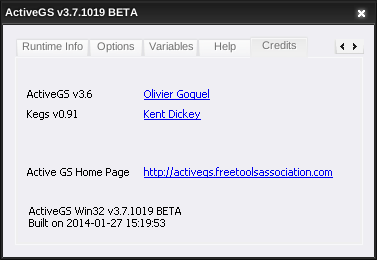
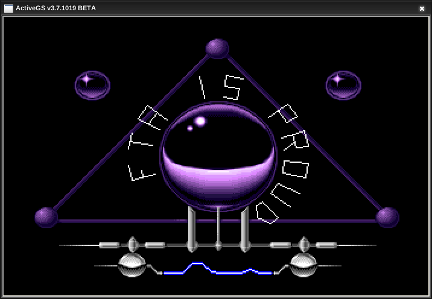
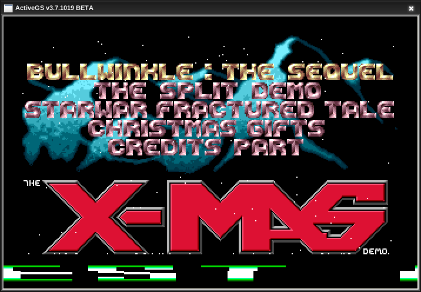
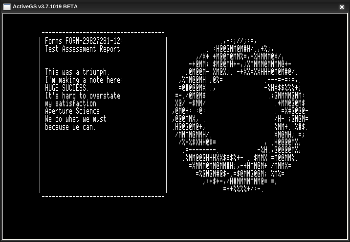
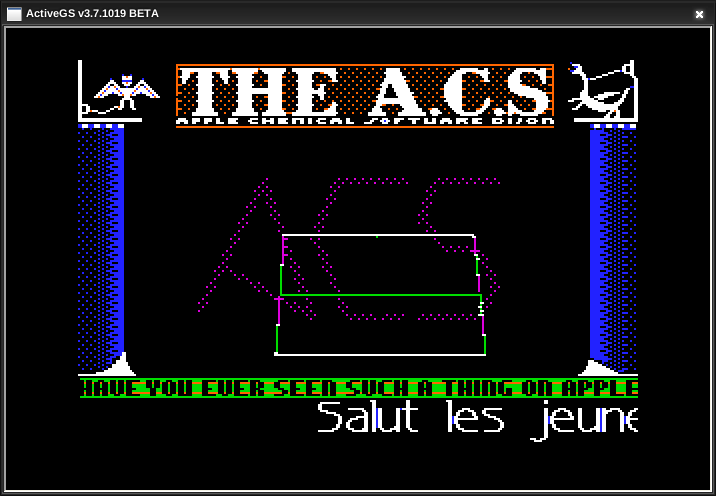

Preview
 Emmannuel Ortega, Founder
Emmannuel Ortega, Founder
TLDR: In addition, Audio Device works, too!
Since the inception of ReactSquad/ReactOS-PH, we have geared up towards more than just a part of the International Media Community. We promised to contribute ourselves by any means necessary to expand the usability of the Operating System.
And today, it happened.
We are proud to present to you that ActiveGS v3.7.1019 is confirmed working on ReactOS v.0.4.15-dev!
As someone who is in charge of this BenchTest, the idea is to run some of the Apps that are able to run on other revisions/editions of Operating Systems, as well as taking up existing ideas to the next level.
If anyone is wondering, this BenchTest is inspired by Druaga1's footage showcasing [the real] Apple IIGS and Modulae. Please take a look at the first part of the series.
Here are the notable pointers to consider after running this BenchTest:
In addition, before this BenchTest, I am having trouble with Audio Devices in which I have to re-install the AC97 Audio Device Driver. After following the documentation and updating the driver through Device Management, prior BenchTests with ActiveGS confirmed that the Audio Device is working.
A special thanks to our co-founder thebelovedmoon for providing the files needed for this BenchTest!
If you want to try ActiveGS yourself, please head over to FTA Page and look for the ActiveGS tab.
Here are some of the Pictures I took while doing this BenchTest:





Tested Apps (in order)
Virtual Machine Specifications
[Shared] Host Machine Specifications